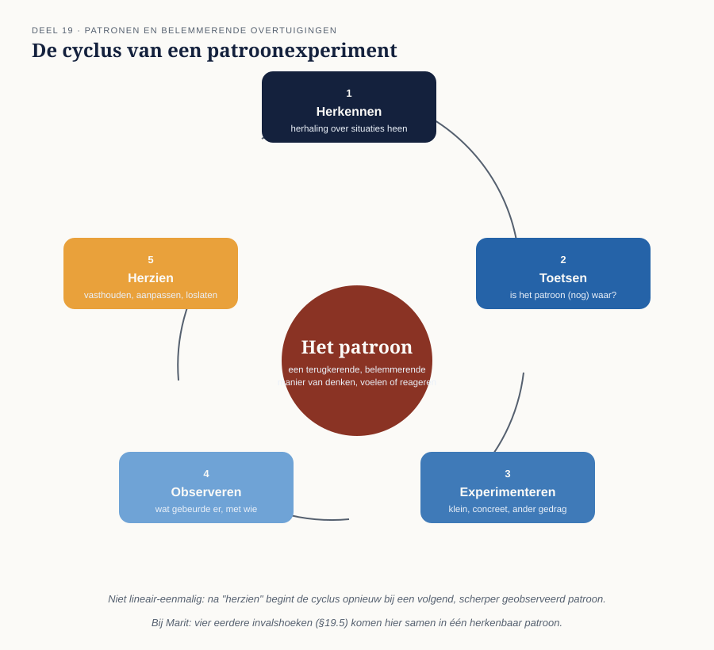

Cursus Coachen · Niveau 2 (NOBCO/EMCC EIA Practitioner · ICF Level 2) · Deel 19 van 30
Patronen en belemmerende overtuigingen
De delen 13 tot en met 18 gaven u vier invalshoeken op hetzelfde soort vraagstuk: oplossingsgericht, cognitief, TA, systemisch, en emotie/lichaam. Dit deel brengt die invalshoeken samen rond één centraal begrip: het patroon — een terugkerende, belemmerende manier van denken, voelen of reageren die zich in meerdere situaties herhaalt.
6secties
±2u30leestijd + werkboek
4controlevragen
1figuur
Positionering. Deze cursus bereidt voor op twee routes tegelijk — het EMCC Competence Framework (NOBCO/EMCC EIA) en de ICF Core Competencies — en vervangt geen van beide officiële trajecten. Studeer voor een accreditatie of credential altijd óók het bronmateriaal van NOBCO/EMCC of ICF zelf.
Niveau 2: ⑪ Intake en driehoekscontract → ⑫ Traject ontwerpen → ⑬ Oplossingsgericht coachen → ⑭ Cognitieve invalshoek → ⑮ Transactionele analyse → ⑯ Systemisch werken → ⑰ Werken met emoties → ⑱ Lichaam en non-verbaal → ⑲ Patronen en overtuigingen (hier) → ⑳ Weerstand en stagnatie → ㉑ Instrumenten verantwoord inzetten → ㉒ Intervisie en tussenassessment
01
Vier invalshoeken, één patroon
⏱ 15 min
De delen 13 tot en met 18 gaven u vier invalshoeken op hetzelfde soort vraagstuk: oplossingsgericht (wat werkt al), cognitief (welke gedachte), TA (welke rol), systemisch (welke context), emotioneel en lichamelijk (wat wordt gevoeld en getoond). Dit deel brengt die invalshoeken samen rond één centraal begrip: het patroon — een terugkerende, belemmerende manier van denken, voelen of reageren die zich in meerdere situaties herhaalt.
Aan het eind van dit deel kunt u:
een patroon herkennen aan herhaling over situaties en momenten heen, niet aan één incident;
een patroon toetsen op actuele bruikbaarheid, zonder het te veroordelen;
een klein, concreet patroonexperiment ontwerpen;
vier eerder geleerde invalshoeken laten samenkomen in één herkenbaar patroon, bij Marit.
02
Een patroon herkennen
⏱ 25 min
Een patroon herkent u niet aan één incident, maar aan herhaling over verschillende situaties en momenten heen. Bruikbare signalen:
Dezelfde reactie in verschillende, ogenschijnlijk losstaande situaties.
Een woord of formulering die de coachee herhaaldelijk gebruikt ("ik moet altijd…", "het is nooit…").
Een reactie van de coach zelf die herhaaldelijk optreedt (zie ook deel 2, eigen reactiviteit) — soms is de coach de eerste die het patroon opmerkt, nog vóór de coachee.
Controlevraag
Uit Werkboek deel 19, Opdracht 19.1 — Een patroon herkennen
1Beschrijf, op basis van een (fictieve of eigen) situatie, drie afzonderlijke momenten waarin dezelfde reactie of hetzelfde patroon zichtbaar wordt. Formuleer daarna het patroon zelf in één zin.Toon antwoord
Een veelgemaakte fout is één uitgebreid incident beschrijven in plaats van drie afzonderlijke, herhalende momenten — herhaling over tijd en context is de kern van een patroon, niet de intensiteit van één moment. Voorbeeld: (1) een collega zegt bij een vergadering direct "ja" op een extra taak, ook al zit de agenda al vol; (2) dezelfde persoon zegt "ja" tegen een vriend die op korte termijn hulp vraagt, terwijl er eigen plannen waren; (3) op het werk neemt hij opnieuw een taak over van een teamlid "omdat het anders niet af komt". Patroon in één zin: "Ik zeg 'ja' voordat ik heb gecheckt of ik het eigenlijk wel wil of kan, uit angst de ander teleur te stellen."
03
Toetsen: is het patroon (nog) waar?
⏱ 25 min
Een patroon is vaak ooit ergens ontstaan als een zinvolle aanpassing — en soms nog steeds bruikbaar, soms niet meer. Toetsen betekent: onderzoeken of het patroon in de huidige situatie nog klopt, zonder het meteen als "fout" te bestempelen. Bruikbare vragen:
"Waar heeft dit patroon je ooit geholpen?"
"Is er een situatie waarin dit patroon je juist in de weg zit?"
"Wat zou er gebeuren als je dit een keer niet deed?"
Deze laatste vraag opent vaak de weg naar een experiment (zie §19.4) — ze is bewust hypothetisch, niet meteen een opdracht. Let op dat de eerste vraag — "waar heeft dit patroon je ooit geholpen?" — niet wordt overgeslagen: coaches neigen naar de twee andere, meer op verandering gerichte vragen. Juist deze validerende vraag draagt bij aan de coachende grondhouding van oordeelloosheid uit deel 2.
Controlevraag
Uit Werkboek deel 19, Opdracht 19.2 — Toetsvragen bij Marit
1Formuleer voor Marit's patroon (twijfelen, instemmen, later spijt) de drie toetsvragen uit §19.3, ingevuld met haar specifieke situatie.Toon antwoord
"Waar heeft dit patroon je ooit geholpen?" — Instemmen hield conflicten in haar team weg toen ze net teamleider werd en nog onzeker was over haar positie. "Is er een situatie waarin dit patroon je juist in de weg zit?" — Bij het geven van kritiek of het onderhandelen over budget, waar instemmen haar positie juist ondermijnt. "Wat zou er gebeuren als je dit een keer niet deed?" — Wat zou er gebeuren als ze een keer niet meteen instemde met een verzoek van haar team, maar eerst bedenktijd nam?
04
Experimenteren met een patroon
⏱ 25 min
Waar deel 8 het experiment als algemeen sessie-element introduceerde, is een patroonexperiment specifiek gericht op het patroon zelf: een kleine, concrete situatie waarin de coachee bewust een andere reactie beproeft dan het gebruikelijke patroon, en observeert wat er gebeurt — niet om het patroon meteen te "verslaan", maar om te ervaren dat een alternatief mogelijk is. Dezelfde criteria als in deel 8 gelden onverkort: klein, concreet, eigendom van de coachee.

Figuur 19-1 — de cyclus van een patroonexperiment: herkennen → toetsen → experiment → observeren → herzien
Controlevraag
Uit Werkboek deel 19, Opdracht 19.3 — Een experiment ontwerpen
1Ontwerp voor Marit een klein, concreet patroonexperiment. Beschrijf: wat doet ze anders dan gebruikelijk, in welke situatie, en welke vraag stel je haar bij de volgende sessie om te observeren wat er gebeurde.Toon antwoord
Experiment: Marit wacht één keer bewust een dag met "ja" zeggen op een verzoek van haar team, in plaats van meteen in te stemmen (§19.5). Observatievraag bij de volgende sessie: "Wat gebeurde er — met jezelf, en met de ander — toen je niet meteen antwoordde?" De vraag is bewust open en niet-sturend: het experiment is er niet op gericht dat ze "nee" zegt, maar dat ze de ruimte tussen verzoek en reactie ervaart.
05
Toepassing: Marit
⏱ 30 min
Marit's patroon (twijfelen, instemmen, later spijt) is nu vanuit meerdere invalshoeken belicht:
Cognitief (deel 14): een moet-overtuiging ("ik moet aardig gevonden worden").
TA (deel 15): reageren vanuit de Aangepaste Kind-positie, vaak de Redder-rol aannemend.
Oplossingsgericht (deel 13): momenten waarop ze wél voor zichzelf opkwam, als uitzondering.
Dit deel vraagt niet om één van deze invalshoeken te kiezen als "de juiste", maar om ze te laten samenkomen in één herkenbaar patroon, en van daaruit een concreet, klein experiment te ontwerpen.
Controlevraag
Uit Werkboek deel 19, Opdracht 19.4 — Vier invalshoeken samenbrengen
1Vul voor Marit's patroon kort in, in één zin per invalshoek, hoe elk van de vier eerdere methodiekdelen (oplossingsgericht, cognitief, TA, systemisch) hetzelfde patroon anders belicht. Wat levert het samenbrengen van deze vier invalshoeken op dat één invalshoek alleen niet had opgeleverd?Toon antwoord
Oplossingsgericht — laat zien dat een alternatief (voor zichzelf opkomen) al eerder bestond, als uitzondering. Cognitief — geeft een aangrijpingspunt in het moment zelf: de moet-overtuiging die aan het instemmen voorafgaat. TA — geeft taal voor de interactiedynamiek: de Aangepaste Kind-positie en de Redder-rol. Systemisch — verklaart waarom het patroon in stand blijft binnen haar team en haar rol als teamleider. Geen van de vier is op zichzelf voldoende — samen geven ze zowel een aangrijpingspunt, een verklaring, een bewijs van mogelijkheid, én een contextueel begrip, wat één invalshoek alleen niet had opgeleverd.
06
Samenvatting
⏱ 10 min
Een patroon herkent u aan herhaling, niet aan een incident.
Toetsen: onderzoeken of het patroon nog klopt, zonder het te veroordelen.
Experimenteren: een kleine, concrete, bewuste afwijking van het patroon, met observatie als doel.
Bij Marit komen vier eerder geleerde invalshoeken (cognitief, TA, oplossingsgericht, en de context uit deel 16) samen in één herkenbaar patroon.
Reflectievragen — geen antwoordsleutel
Herkent u bij uzelf een patroon dat ooit zinvol was en dat u nu soms in de weg zit? Wat zou een klein experiment daarmee kunnen zijn? En welke van de vier invalshoeken (oplossingsgericht, cognitief, TA, systemisch) grijpt u zelf het snelst, als coach in wording, om een patroon te begrijpen?
Verder naar deel 20
Deel 20 behandelt wat te doen als een patroon, ondanks toetsen en experimenteren, hardnekkig blijft: weerstand herkennen, stagnatie onderscheiden van een traag traject, en — als het nodig is — een traject verantwoord afsluiten, met Joost als casus.